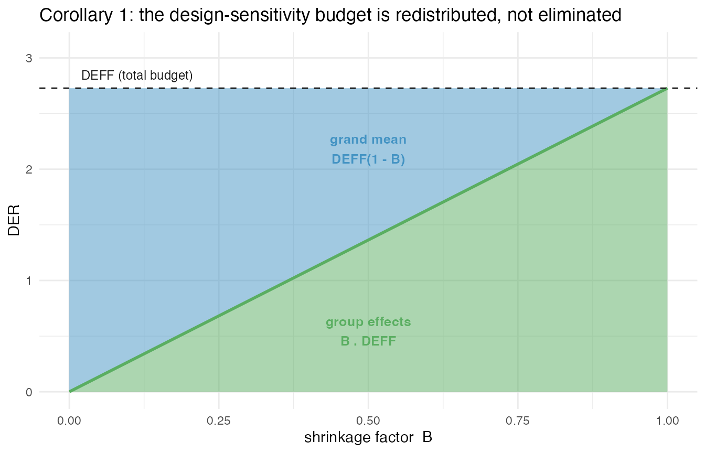

Decomposition Theorems and the Conservation Law
JoonHo Lee
2026-07-04
Source:vignettes/theory-decomposition.Rmd
theory-decomposition.RmdOverview
The Design Effect Ratio is defined for any weighted pseudo-posterior,
but for one model class it stops being a black box. Under a
balanced conjugate Gaussian hierarchical model, every
parameter’s DER admits an exact finite-sample closed
form in terms of three quantities you can read off the design
and the fit: the Kish design effect \mathrm{DEFF}, the shrinkage factor B, and, for fixed effects, the between-group
share R_k of that coefficient’s
identifying variation. This article states those closed forms — Theorem
1 (fixed effects), Theorem 2 (random effects), and the conservation law
(Corollary 1) — and then verifies them numerically on the bundled
nsece_demo data.
This vignette is written for methodologists. The DER
definition and the Kish design effect it builds on are
established (see vignette("theory-der") and
vignette("theory-sandwich")); the closed-form
decomposition of the DER into a design-effect term modulated by
hierarchical shrinkage is the paper’s novel contribution. Where
earlier work gives an asymptotic sandwich, the results below are
algebraic identities that hold at any finite J and n.
We cover, in order:
- The conditions (C1)-(C3) and the common-\mathrm{DEFF} clause under which the closed forms hold.
- Theorem 1 — fixed-effect DERs live in a band [\mathrm{DEFF}(1-B),\ \mathrm{DEFF}].
- Theorem 2 — random-effect DERs factor into design, shrinkage, and a finite-group correction.
- The conservation law — design sensitivity is redistributed across the hierarchy, never eliminated.
-
Empirical verification with
der_decompose()andder_theorem_check(). - When the formulas diverge from the software’s exact computation.
Conditions (C1)-(C3) and the common-DEFF clause
The theorems are stated for a specific, deliberately clean model. Let unit i in group j have outcome y_{ij} \mid \theta_j, \boldsymbol{\beta} \sim \mathcal{N}(\mathbf{x}_{ij}^{\mathsf{T}}\boldsymbol{\beta} + \theta_j,\ \sigma_e^2), \qquad \theta_j \sim \mathcal{N}(0, \sigma_\theta^2). The intercept sits in \mathbf{x}_{ij}; its coefficient, the grand mean, is written \mu. The three conditions are:
- (C1) Model class. The conjugate Gaussian hierarchical model above, with balanced groups of common size n, a flat prior on \boldsymbol{\beta}, known variances, and non-collinear covariates.
- (C2) Weights. Strictly positive weights under the global unit-mean convention \tilde{w}_{ij} = N\,w_{ij}/\sum w_{i'j'}, with finite within-group design effects \mathrm{DEFF}_j.
-
(C3) Target. The declared sandwich target of
vignette("theory-sandwich")with the model groups as the aggregation unit.
Balance makes the shrinkage factor common across groups, B_j \equiv B = \frac{\sigma_\theta^2}{\sigma_\theta^2 + \sigma_e^2/n}, but it does not make the design effects common. The clean \mathrm{DEFF} in Theorems 1 and 2 therefore requires one further hypothesis.
Note. Theorems 1 and 2 state their headline results under the additional common-\mathrm{DEFF} clause \mathrm{DEFF}_j \equiv \mathrm{DEFF}. This is a genuine assumption, separate from balance. Without it, the same algebra yields general effective-meat forms (distillation S-B.1, S-B.3) in which \mathrm{DEFF} is replaced by an ensemble over \{(B_j, \mathrm{DEFF}_j)\}; we return to this in “When the formulas diverge.”
Key insight. These are finite-sample algebraic identities, not asymptotics in J or n. Nothing below relies on a limit; the equalities hold exactly at, say, J = 3 groups of n = 5. That is what makes the DER decomposition a design statement rather than a large-sample approximation.
The shrinkage factor B is the empirical-Bayes reliability ratio of Fay and Herriot (1979): the weight a group’s own data receives relative to the prior. As n \to \infty, B \to 1 (data-rich groups trust themselves); as n \to 0, B \to 0 (data-poor groups are pulled to the grand mean). Every result in this article is ultimately a statement about how this one number reallocates the design effect across the parameter vector.
Theorem 1 (fixed effects)
Statement. Under (C1)-(C3) and \mathrm{DEFF}_j \equiv \mathrm{DEFF}, \mathrm{DER}_{\beta_k} = \mathrm{DEFF}\,(1 - R_k),
\qquad R_k \in [0, B], where R_k
is the fraction of covariate k’s
identifying variation that comes from between-group
differences, R_k =
\frac{[\mathbf{S}_\beta^{-1}\, \boldsymbol{\Delta}\,
\mathbf{S}_\beta^{-1}]_{kk}}{[\mathbf{S}_\beta^{-1}]_{kk}}, \qquad
\boldsymbol{\Delta} = \sum_j \frac{\tau}{(a_j +
\tau)^2}\,\mathbf{b}_j\mathbf{b}_j^{\mathsf{T}} \succeq 0, and
B = \sigma_\theta^2/(\sigma_\theta^2 +
\sigma_e^2/n) is the common shrinkage factor. (\mathbf{S}_\beta is the Schur-complement
precision for \boldsymbol{\beta}; \mathbf{b}_j, a_j, and \tau =
1/\sigma_\theta^2 are as in
vignette("theory-sandwich").)
Read R_k as a dial from 0 to B. The design effect \mathrm{DEFF} is the raw inflation from unequal weighting; the factor (1 - R_k) is how much of it a given coefficient actually inherits, and that inheritance shrinks precisely to the extent the coefficient leans on between-group contrasts. Two endpoints make the mechanism concrete.
Special case: pure within-group covariate (R_k = 0). \mathrm{DER}_{\beta_k} = \mathrm{DEFF}. A covariate that varies only within groups is identified entirely from same-group comparisons. Those comparisons sit inside the very clusters the design correlated, and the prior on \boldsymbol{\theta} acts at the group level, so it cannot absorb the intra-group design-induced correlation. Such a coefficient is fully exposed and inherits the whole design effect. These are the Tier I-a parameters — the primary correction candidates.
Special case: pure between-group covariate (R_k = B). \mathrm{DER}_{\beta_k} = \mathrm{DEFF}\,(1 - B). A covariate that varies only between groups (or is group-level) is identified from inter-group contrasts, and that between-group information is exactly what hierarchical shrinkage diffuses into the prior. The coefficient is shielded by the factor (1 - B): heavily shrunk models (large B) protect it most. These are the Tier I-b parameters, typically well below any sensible threshold even when \mathrm{DEFF} is large.
Key insight. Fixed-effect DERs span the band [\mathrm{DEFF}(1-B),\ \mathrm{DEFF}], and where a coefficient lands is a property of its covariate, not of the design alone. Two coefficients in the same model, fit to the same data with the same \mathrm{DEFF}, can differ by a factor of 1/(1-B) purely because one is identified within groups and the other between them.
For nsece_demo the band endpoints are easy to compute.
With the Kish global design effect \mathrm{DEFF} = 2.728 and shrinkage B = 0.854 (the fitted mean_B),
the band runs from
DEFF <- 2.728 # Kish global design effect for nsece_demo (deff_used)
B <- 0.854 # fitted shrinkage factor (glance: mean_B)
c(lower_DEFF_1minusB = round(DEFF * (1 - B), 3),
upper_DEFF = round(DEFF, 3))
#> lower_DEFF_1minusB upper_DEFF
#> 0.398 2.728so a within-group coefficient should sit near 2.73 and a between-group coefficient near 0.4. We confirm both in the verification section.
Theorem 2 (random effects)
Random effects are identified from both layers — within groups through the error variance, between groups through the prior — so their DER carries the shrinkage factor explicitly.
Statement (a): conditional on the grand mean. Under (C1)-(C3) and \mathrm{DEFF}_j \equiv \mathrm{DEFF}, \mathrm{DER}_\theta^{\mathrm{cond}} = B \cdot \mathrm{DEFF}.
Statement (b): marginal, at finite J. \mathrm{DER}_\theta = B \cdot \mathrm{DEFF} \cdot \kappa(J), \qquad \kappa(J) = 1 - \frac{1}{J(1 - B) + B}.
The conditional form is the clean one: a group effect inherits the design effect scaled by B. When groups are data-rich (B \to 1) they behave like ordinary fixed effects and \mathrm{DER}_\theta^{\mathrm{cond}} \to \mathrm{DEFF}; when groups are data-poor (B \to 0) shrinkage dominates and \mathrm{DER}_\theta^{\mathrm{cond}} \to 0. The marginal form multiplies this by the finite-group correction \kappa(J), which arises because the marginal posterior of \theta_j integrates over the grand mean \mu, coupling the J groups together.
The correction \kappa(J) is a pure function of J and B. It rises monotonically to 1 as the number of groups grows, and is materially below 1 only when J is tiny:
kappa <- function(J, B) 1 - 1 / (J * (1 - B) + B)
data.frame(
J = c(3, 5, 10, 20, 50, 100),
kappa_B0.5 = round(kappa(c(3, 5, 10, 20, 50, 100), B = 0.5), 3)
)
#> J kappa_B0.5
#> 1 3 0.500
#> 2 5 0.667
#> 3 10 0.818
#> 4 20 0.905
#> 5 50 0.961
#> 6 100 0.980With J = 3 groups and B = 0.5, \kappa = 0.5 — a large downward correction; by J = 50 it is 0.961, essentially negligible. For the 51-group demo, \kappa is close enough to 1 that the conditional and marginal forms nearly coincide.
Key insight. The shrinkage-design tradeoff: the parameters most protected by shrinkage (small B) are the least exposed to the design. This is the opposite of the usual worry. Applying a design correction to a heavily-shrunk random effect does not fix an understated interval — there is little design sensitivity there to begin with — it overwrites the shrinkage that was doing the work. Under a model-group target, random effects are Tier II and rarely need correction.
The conservation law (Corollary 1)
The two theorems are not independent. Combining Theorem 1 at the grand mean (which is pure between-group, so R_\mu = B and \mathrm{DER}_\mu = \mathrm{DEFF}(1 - B)) with the conditional random-effect result yields an exact identity.
Statement. Under (C1)-(C3), \mathrm{DER}_\mu + \mathrm{DER}_\theta^{\mathrm{cond}} = \mathrm{DEFF}.
Read \mathrm{DEFF} as a fixed design-sensitivity budget — the total variance inflation that unequal weighting injects into the hierarchy. The conservation law says that budget is redistributed, not eliminated: shrinkage moves it off the group effects and onto the grand mean rather than making it disappear. The share \mathrm{DEFF}(1 - B) accumulates at the grand mean; the share B \cdot \mathrm{DEFF} is absorbed by the group effects. As B swings from 0 to 1, the budget slides continuously from the grand mean to the group effects, but the two shares always sum to \mathrm{DEFF}.
if (requireNamespace("ggplot2", quietly = TRUE)) {
library(ggplot2)
DEFF <- 2.728
budget <- data.frame(B = seq(0, 1, by = 0.01))
budget$grand_mean <- DEFF * (1 - budget$B) # DER_mu
budget$group_effect <- DEFF * budget$B # DER_theta^cond
ggplot(budget, aes(x = B)) +
geom_ribbon(aes(ymin = 0, ymax = group_effect),
fill = svyder_pal[["II"]], alpha = 0.5) +
geom_ribbon(aes(ymin = group_effect, ymax = DEFF),
fill = svyder_pal[["I-b"]], alpha = 0.5) +
geom_line(aes(y = group_effect), colour = svyder_pal[["II"]], linewidth = 1) +
geom_hline(yintercept = DEFF, linetype = "dashed",
colour = svyder_pal[["target"]]) +
annotate("text", x = 0.5, y = DEFF * 0.20, label = "group effects\nB . DEFF",
colour = svyder_pal[["II"]], fontface = "bold", size = 3.4) +
annotate("text", x = 0.5, y = DEFF * 0.80, label = "grand mean\nDEFF(1 - B)",
colour = svyder_pal[["I-b"]], fontface = "bold", size = 3.4) +
annotate("text", x = 0.02, y = DEFF + 0.12, label = "DEFF (total budget)",
hjust = 0, colour = svyder_pal[["target"]], size = 3.2) +
labs(x = "shrinkage factor B", y = expression(DER),
title = "Corollary 1: the design-sensitivity budget is redistributed, not eliminated") +
coord_cartesian(ylim = c(0, DEFF + 0.35)) +
theme_minimal(base_size = 11)
}
How the fixed design-sensitivity budget DEFF splits between the grand mean (blue) and the group effects (green) as the shrinkage factor B varies. The two shares always sum to DEFF (dashed line); shrinkage redistributes design sensitivity across the hierarchy rather than removing it.
At B = 0 the whole budget sits on the grand mean; at B = 1 it has all moved to the group effects; everywhere in between the split is exactly \mathrm{DEFF}(1-B) : B\,\mathrm{DEFF}.
Note. The conservation law is proven for the balanced conjugate Gaussian class under common \mathrm{DEFF}. Whether an analogous identity survives to unbalanced, non-Gaussian, or deeper hierarchies is open (paper, Discussion).
Empirical verification
We now check the closed forms against the software’s exact sandwich
computation on nsece_demo — binomial, N = 6785, J =
51 states, \mathrm{DEFF} = 2.728
— with the design-PSU target
(cluster = nsece_demo$psu). The demo is binomial rather
than Gaussian, so the theorems apply only as a linearized
approximation; the point is to see the mechanism reproduce, not to
claim machine-precision equality.
result <- der_compute(
nsece_demo$draws,
y = nsece_demo$y,
X = nsece_demo$X,
group = nsece_demo$group,
weights = nsece_demo$weights,
cluster = nsece_demo$psu, # design-based target; NEVER psu =
family = "binomial",
sigma_theta = nsece_demo$sigma_theta,
param_types = nsece_demo$param_types
)
der_decompose(): the closed-form ingredients
der_decompose() returns, for every parameter, the design
effect used, the shrinkage B, the
between-group share R_k, the
finite-group factor \kappa, and the
resulting predicted DER — alongside the empirically
computed der.
dc <- der_decompose(result)
head(dc, 6)
#> param param_type der deff_used B_used R_k kappa
#> 1 beta[1] fe_between 0.2626885 2.727828 NA 0.93273657 NA
#> 2 beta[2] fe_within 2.6894416 2.727828 NA 0.01430246 NA
#> 3 beta[3] fe_between 0.3430527 2.727828 NA 0.92282567 NA
#> 4 theta[1] re 3.3858856 3.479991 0.6441524 NA 0.9467869
#> 5 theta[2] re 0.6759045 2.417686 0.6072076 NA 0.9515495
#> 6 theta[3] re 1.1182861 1.878577 0.5847477 NA 0.9540496
#> der_predicted
#> 1 0.1834831
#> 2 2.6888138
#> 3 0.2105183
#> 4 2.1223599
#> 5 1.3969105
#> 6 1.0480173Look first at the three fixed effects. The within-group covariate is
beta[2] (poverty_cwc; in
package output the poverty covariate is column 2, not column 1):
dc[dc$param_type != "re",
c("param", "param_type", "der", "deff_used", "R_k", "der_predicted")]
#> param param_type der deff_used R_k der_predicted
#> 1 beta[1] fe_between 0.2626885 2.727828 0.93273657 0.1834831
#> 2 beta[2] fe_within 2.6894416 2.727828 0.01430246 2.6888138
#> 3 beta[3] fe_between 0.3430527 2.727828 0.92282567 0.2105183This is Theorem 1 working exactly as advertised:
-
beta[2](within, Tier I-a): R_k \approx 0.014 — almost no between-group content, so \mathrm{DER}_{\beta_k} \approx \mathrm{DEFF}. The empiricalderis 2.689 and the predicted value is 2.689: a within-group coefficient inherits essentially the whole design effect. -
beta[1]andbeta[3](between, Tier I-b): R_k \approx 0.93 — almost all between-group content, so both are pulled down into the shielded end of the band, withder0.263 and 0.343 respectively. These are below 1: correcting them would wrongly narrow already-calibrated intervals.
The beta[2] agreement is the cleanest demonstration in
the package that a pure within-group coefficient sits at R_k \approx 0 and inherits the full \mathrm{DEFF}.
Note.
der_decompose()reportsder_predictedusing each parameter’s own Kishdeff_used(here 2.728). The companionder_theorem_check()below scores Theorem 1 against the mean design effect (2.595, the fittedmean_deff), so itsder_theorem1forbeta[2]reads about 2.595 rather than 2.689. Both are legitimate; they differ only in which \mathrm{DEFF} estimate stands in for the common value the theorem assumes.
For the random effects, der_decompose() populates B and \kappa
(and leaves R_k as NA,
since R_k is a fixed-effect
concept):
re <- dc[dc$param_type == "re", ]
head(re[, c("param", "der", "deff_used", "B_used", "kappa", "der_predicted")], 4)
#> param der deff_used B_used kappa der_predicted
#> 4 theta[1] 3.3858856 3.479991 0.6441524 0.9467869 2.122360
#> 5 theta[2] 0.6759045 2.417686 0.6072076 0.9515495 1.396910
#> 6 theta[3] 1.1182861 1.878577 0.5847477 0.9540496 1.048017
#> 7 theta[4] 2.2098098 2.745753 0.7195228 0.9334392 1.844132Here B \approx 0.58-0.64 and \kappa
\approx 0.95, matching Theorem 2: theta[1], for
instance, predicts B \cdot \mathrm{DEFF} \cdot
\kappa \approx 2.12. But note the empirical der for
theta[1] is 3.386 against a predicted 2.122 — a large gap.
That is expected, and it is a data limitation, not a theory
failure.
Key insight. This example is using the design-PSU target, so the random-effect gaps are best read as linearized-theory approximation error: the demo is binomial, groups are unbalanced, and the design effects are heterogeneous across states. Read the random-effect results tier-wise — the median RE DER is 1.311, comfortably in the Tier II range — not state-by-state.
Under a model-group target there is an additional estimator limitation: each state contributes only one centered score-total contrast to its own meat entry. That one-contrast issue belongs to the model-group target, not to the design-PSU computation shown here.
der_theorem_check(): scoring the closed forms
der_theorem_check() puts the empirical DER next to the
theorem-predicted value and reports which theorem was used and the
relative error.
tc <- der_theorem_check(result)
head(tc, 6)
#> param param_type der_empirical der_theorem1 der_theorem2 relative_error
#> 1 beta[1] fe_between 0.2626885 0.3781171 NA 0.43941210
#> 2 beta[2] fe_within 2.6894416 2.5952698 NA 0.03501540
#> 3 beta[3] fe_between 0.3430527 0.3781171 NA 0.10221260
#> 4 theta[1] re 3.3858856 NA 2.122360 0.37317436
#> 5 theta[2] re 0.6759045 NA 1.396910 1.06672753
#> 6 theta[3] re 1.1182861 NA 1.048017 0.06283619
#> theorem_used
#> 1 Theorem 1 (between)
#> 2 Theorem 1 (within)
#> 3 Theorem 1 (between)
#> 4 Theorem 2 (RE)
#> 5 Theorem 2 (RE)
#> 6 Theorem 2 (RE)The fixed-effect rows confirm the pattern: beta[2]
(within) is scored against Theorem 1’s within branch with small relative
error, while the between effects
beta[1]/beta[3] are scored against the between
branch. The random-effect rows use Theorem 2 and, per the caveat above,
show larger per-state relative errors because the design-PSU demo is a
finite, unbalanced, binomial approximation to the balanced Gaussian
theorem — theta[2] is the worst offender in the first few
rows.
The conservation law is attached as an attribute, evaluated on the fitted quantities:
cl <- attr(tc, "conservation_law")
cl
#> $der_mu
#> beta[1]
#> 0.2626885
#>
#> $der_theta_cond
#> [1] 2.227894
#>
#> $der_theta_marginal_mean
#> [1] 1.610739
#>
#> $der_theta_mean
#> [1] 1.610739
#>
#> $conservation_sum
#> beta[1]
#> 2.490582
#>
#> $deff_mean
#> [1] 2.59527
#>
#> $relative_error
#> beta[1]
#> 0.04033774The identity to check is \mathrm{DER}_\mu +
\mathrm{DER}_\theta^{\mathrm{cond}} = \mathrm{DEFF}. The
attribute reports der_mu (the grand-mean DER, here the
beta[1] intercept), der_theta_cond (the
conditional theorem term, computed from B_j
\mathrm{DEFF}_j), their conservation_sum, and
deff_mean for comparison. It also reports
der_theta_marginal_mean, the empirical mean of the fitted
random-effect DERs. The marginal mean is useful as an empirical
diagnostic, but it is not the conditional term in the
conservation identity.
On this binomial demo the conditional sum and \mathrm{DEFF} agree only approximately — the
relative_error field quantifies the gap — because the model
is not Gaussian, the groups are unbalanced, and the design effects are
heterogeneous. The identity is exact only in the balanced
Gaussian world the theorem inhabits; the demo shows the mechanism, not
machine-precision equality.
When the formulas diverge
The closed forms are exact under (C1)-(C3) and the common-\mathrm{DEFF} clause. Two departures, both present in real applications and partly in the demo, move the software’s exact sandwich away from the simple predictions:
- Heterogeneous design effects (\mathrm{DEFF}_j not common). Balance forces a common B but never a common \mathrm{DEFF}. When the within-group design effects differ, Theorem 1’s \mathrm{DEFF} is replaced by \mathbf{M} = \sum_j \mathrm{DEFF}_j\, \mathbf{C}_j^{(d)} with \mathbf{C}_j^{(d)} = \mathbf{W}_j + \tfrac{(1 - B_j)^2}{a_j}\mathbf{b}_j\mathbf{b}_j^{\mathsf{T}} (distillation S-B.1), and the random-effect DER depends on the whole ensemble \{(B_j, \mathrm{DEFF}_j)\} rather than a naive per-group product (distillation S-B.3).
- Unbalanced groups (n_j not common). Then B_j varies too, and the single band [\mathrm{DEFF}(1-B),\ \mathrm{DEFF}] becomes a family of bands. The ensemble-exact expressions still hold; the two-number summary does not.
The software always computes the exact sandwich, so
der_decompose() and der_theorem_check() remain
correct diagnostics regardless. The closed forms are best read as the
interpretive skeleton — they tell you which direction each tier
moves and why — with the ensemble forms of distillation S-B.1-S-B.3 as
the exact statement when balance or common \mathrm{DEFF} fails.
What’s next?
- To see how these tiers turn into a classification and a
selective correction — the four-tier table, the threshold c_0, and block-Cholesky CCC — read
vignette("theory-classification-correction"). - For the bread and meat behind the sandwich the
theorems decompose — penalized Hessian, cluster-aggregated meat, weight
conventions — see
vignette("theory-sandwich"). - For the DER definition and the three regimes that motivate all of
this, see
vignette("theory-der"). - To watch the decomposition play out on a full worked example, see the applied Case Study.
References
- Lee, J., Williams, M. R., & Savitsky, T. D. (2026). Design Effect Ratios for Bayesian Survey Models: A Diagnostic Framework for Identifying Survey-Sensitive Parameters. Journal of Survey Statistics and Methodology (submitted).
- Fay, R. E., & Herriot, R. A. (1979). Estimates of income for small places: An application of James-Stein procedures to census data. Journal of the American Statistical Association, 74(366), 269-277.
- Kish, L. (1965). Survey Sampling. Wiley.